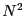
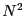

The total system potential energy is most often computed by means of
analytical potentials. Such a potential energy can be written
as a continuous function of the positions of particle centers-of-mass.
(Such potentials are often termed ``empirical'' when applied to atomic
systems because they formally neglect quantum mechanics.) In most
molecular simulations, the total system potential can be decomposed in
the following way:
| (80) |
Analytical potentials are most easily understood by considering model
systems which are decomposable into spherically-symmetric, pairwise
interactions. Consider then the following total system potential
energy:
| (81) |
The simplest pair potential is the ``hard-sphere'':
The most celebrated pair potential is the Lennard-Jones potential:
| The Lennard-Jones pair potential. |
Reduced Units. Because the Lennard-Jones potential is so
prevalent in molecular simulation, it is essential that we understand
the unit system most often chosen for simulations using this
potential. For computational simplicity, energy in a Lennard-Jones
system is measured in units of  and length in .
This means that everywhere in the code you would expect to see
and length in .
This means that everywhere in the code you would expect to see
 or , you find a 1.
or , you find a 1.
Now, to compute the total potential  for a system of
particles, the simplest algorithm is to loop over all unique
pairs of particles. Here is a simple pair search C function
(the so-called  algorithm because its complexity scales like
) to compute the total energy of a system of Lennard-Jones
particles, in reduced units:
for a system of
particles, the simplest algorithm is to loop over all unique
pairs of particles. Here is a simple pair search C function
(the so-called  algorithm because its complexity scales like
) to compute the total energy of a system of Lennard-Jones
particles, in reduced units:
double total_e ( double * rx, double * ry, double * rz, int n ) {
int i,j;
double dx, dy, dz, r2, r6, r12;
double e = 0.0;
for (i=0;i<(n-1);i++) {
for (j=i+1;j<n;j++) {
dx = (rx[i]-rx[j]);
dy = (ry[i]-ry[j]);
dz = (rz[i]-rz[j]);
r2 = dx*dx + dy*dy + dz*dz;
r6 = r2*r2*r2;
r12 = r6*r6;
e += 4*(1.0/r12 - 1.0/r6);
}
}
return e;
}
Although it is strictly correct, the pair search algorithm is inefficient if there is a finite interaction range in the pair potential. Typically in dense liquid simulations, a Lennard-Jones pair potential is truncated at . There are some potentials that are cut off at even shorter distances. The point is that, when the maximum interaction distance is finite, each particle has a finite maximum number of interaction partners. (This assumes number density is bounded, which is a reasonable assumption.) More advanced techniques (which we discuss later) can be invoked to make the pair search much more efficient in this case. The two most common are (1) the Verlet list, and (2) the link-cell list. For now, and to keep the presentation simple, we will stick to the inefficient, brute-force algorithm.